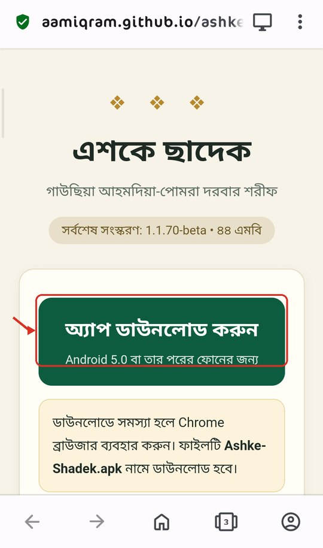
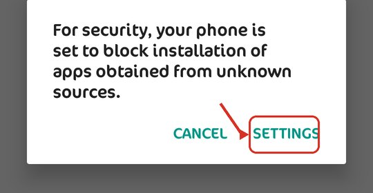
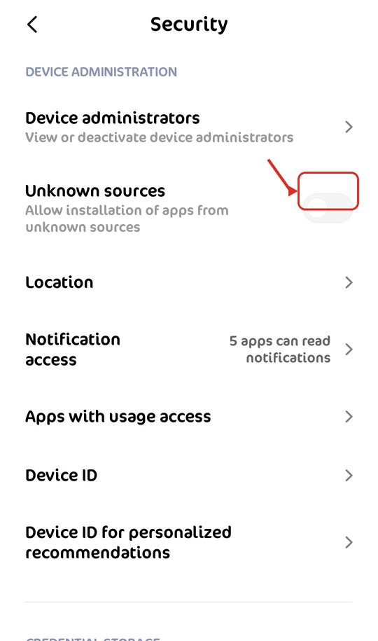
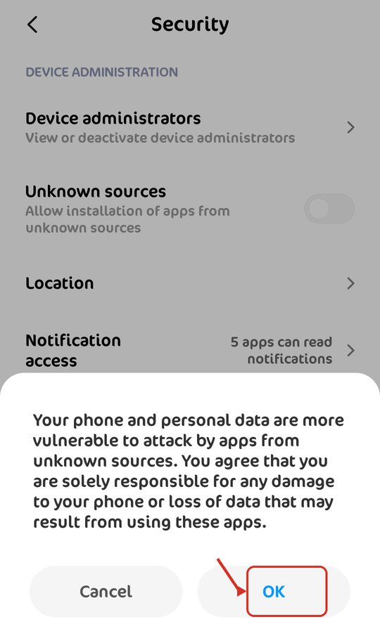
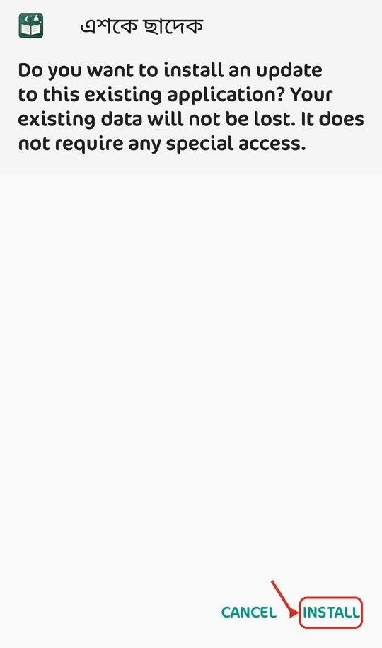
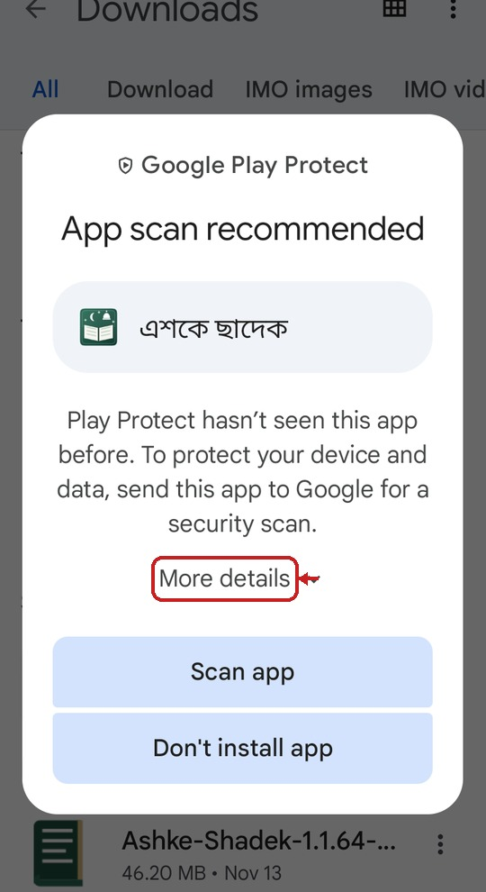
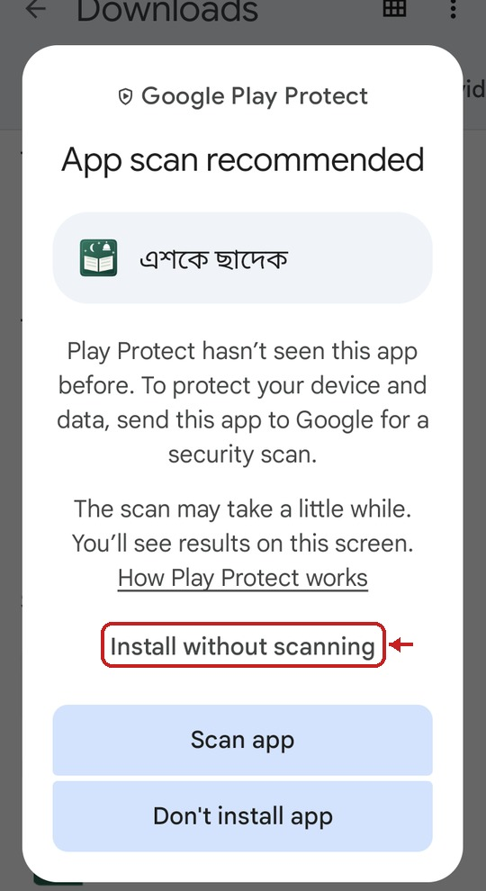
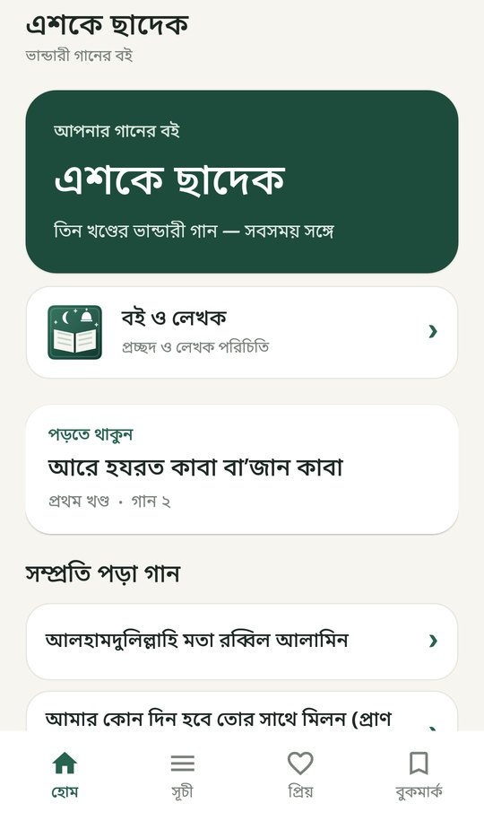

গাউছিয়া আহমদিয়া-পোমরা দরবার শরীফ
সর্বশেষ সংস্করণ: 1.1.70-beta • ৪৪ এমবিছবিতে লাল দাগ দেওয়া বাটনে চাপুন। ধাপগুলো উপর থেকে নিচে দেখুন।
সবুজ “অ্যাপ ডাউনলোড করুন” বাটনে চাপুন। ডাউনলোড শেষ হলে ব্রাউজারের Downloads থেকে Ashke-Shadek.apk ফাইলটি খুলুন।

সবুজ বাটনে চাপুন
এই সতর্কতা এলে SETTINGS চাপুন। (সব ফোনে এই ধাপ আসবে না।)

Cancel নয় — SETTINGS
Unknown sources-এর সুইচটি ডান দিকে চালু করুন।

সুইচটি ডান দিকে চালু করুন
“more vulnerable…” লেখা সতর্কবার্তা এলে OK চাপুন — Cancel নয়।

OK চাপুন
ফোনের ইনস্টলার এলে INSTALL চাপুন।

INSTALL চাপুন
অ্যাপটি Play Store-এ প্রকাশিত নয় বলে Play Protect প্রথমবার এই সতর্কতা দেখাতে পারে — এটি স্বাভাবিক। “App scan recommended”, “Play Protect hasn’t seen this app before” বা “Unsafe app blocked” এলে More details চাপুন।

More details চাপুন
তারপর Install without scanning চাপুন। কিছু ফোনে এই লেখাটি Install anyway হিসেবে দেখা যায়।

Install without scanning / Install anyway চাপুন
ইনস্টল শেষ হলে Open চাপুন। অ্যাপটি হোম স্ক্রিনেও পাবেন — নাম এশকে ছাদেক।

হোম স্ক্রিনে অ্যাপটি খুলুন
অ্যাপের ভেতর থেকেই আপডেট পাওয়া যাবে — বারবার নতুন লিংক খোঁজার দরকার নেই।
এই পেজটি খুলতে ফোনের ক্যামেরা দিয়ে স্ক্যান করুন।